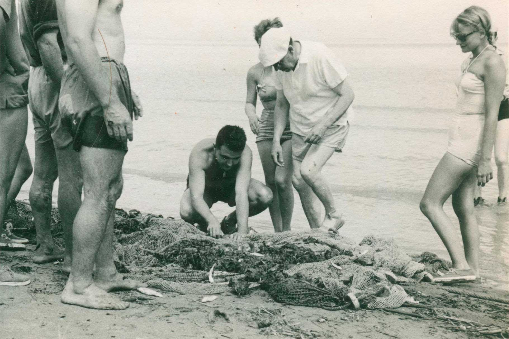
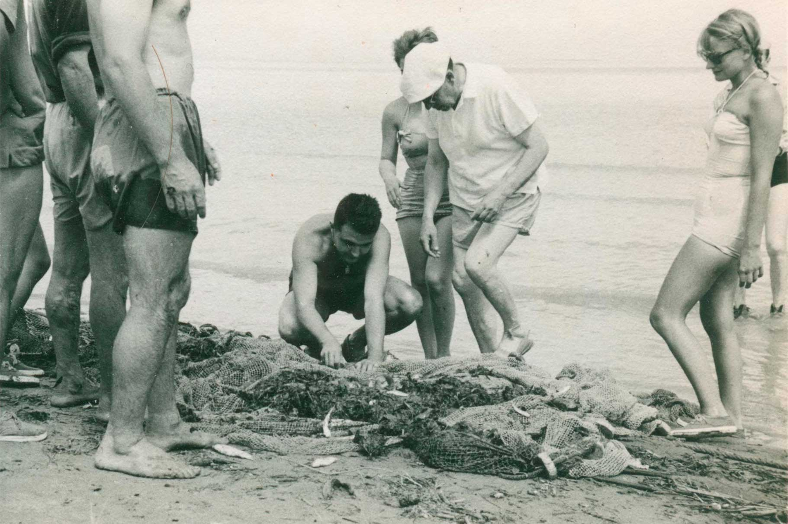

La pesca a les platges de Buda era tan natural com agafar-ho “a la paupa”, en “cèrcols” o bé complementant-ho amb altres estris de pesca més senzills, com la reixaga, una fitora de 4 o 5 pues llises i punxegudes. Arts de platja per pescar i mariscar: muixarres, llobarros, corballs, llisses,… mol·luscs marins com les tellerines (“tallarina”), les escopinyes (“catxels”), les cloïsses (“grúmols”) i altres espècies capturades al front marítim de Buda, “agafades” tradicionalment pels pescadors i colons de l’illa, i que actualment són espècies molt preuades al mercat pel seu gran valor gastronòmic.
MARISCAR I PESCAR A MAR

Arxiu família Borés
(gentilesa Museu de les Terres de l’Ebre).
Com diu el seu nom, la pesca de la “paupa” consisteix a anar palpant el fons sorrenc de la platja per localitzar els peixos després d’haver tirat una xarxa en forma
de mitja lluna. Les orades, els llobarros i les llisses, els peixos més comuns a la zona, s’amaguen sota la sorra i quan es troben, se’ls ha d’agafar hàbilment amb la mà.
Els catxels, la tallarina i fins i tot el grúmol s’agafaven també amb molta facilitat a les llargues platges sorrenques de Buda, i es pagaven molt bé quan els venien als
“arrieros” que posteriorment ho venien a les peixateries i sobretot als mercats de les grans ciutats.

 
